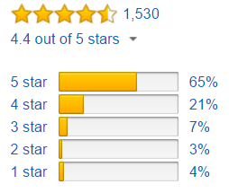

Quick Stats - Descriptive Statistics Part 4 - Application of Mean, Median and Mode
Introduction
In the fourth part of our descriptive statistics series we will look at a real world application of the mean, median and mode. If you are unfamiliar with these concepts, please read parts 1, 2 and 3 of this blog series.
Quick Stats – Descriptive Statistics Part 1 – Mean
Quick Stats – Descriptive Statistics Part 2 – Median
Quick Stats – Descriptive Statistics Part 3 – Mode
Customer Ratings
Customer rating systems are used within ecommerce all of the time. They provide useful insights to customers on which items they would like to purpose. Imagine visiting Amazon.com. Typically you will try to find items that meet a particular price range and have good customer reviews.

Image courtesy of Amazon.com
The ratings are typically broken up into a 1 to 5 star system. Providing 1 star is the worst rating and providing 5 stars is the best rating. These ratings are broken up into a frequency table illustrating the number of ratings given. Additionally, we can see the average (mean) star rating. However, we do not typically see the median. Why do you think that is?
 The plot above illustrates a histogram of customer ratings. It represents the frequency of ratings provided by each customer. The green line is the median and the blue line is the mean. This plot is not representative of the sample image above; it is random sample data that I generated in R (code below).
The plot above illustrates a histogram of customer ratings. It represents the frequency of ratings provided by each customer. The green line is the median and the blue line is the mean. This plot is not representative of the sample image above; it is random sample data that I generated in R (code below).
data <- rep(1, 66)
data <- c(data, rep(2, 184))
data <- c(data, rep(3, 200))
data <- c(data, rep(4, 201))
data <- c(data, rep(5, 349))
m = mean(data)
md = median(data)
hist(data, main="Customer Ratings", ylab="Number of Customers", xlab="Rating")
abline(v = m, col = "blue")
abline(v = md, col = "green")
Knowing that the median is 4 and the average is 3.583. Do you think it is important to know the median when deciding on a product to purchase? Probably not. If you remember our discussion on the mean and median, it is very context dependent on when to use one versus the other. Imagine if we only displayed the median. You would probably be more interested in purchasing this item.
Conclusion
Seeing a real world application of the mean, median and mode should provide you with more insight into these important descriptive statistics. Customer rating systems are used in ecommerce everywhere and the intuition behind them should be a little clearer. In the next blog post we will look at the standard deviation.